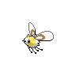

📖 英語版の図鑑説明
An opponent’s aura can tell Cutiefly what that opponent’s next move will be. Then Cutiefly can glide around the attack and strike back.
日本語訳
相手のオーラから次の動きを察知し、攻撃をかわして反撃する。
💡 英語名「Cutiefly」の由来
英語名「Cutiefly」は、cutie（かわいい子）とfly（飛ぶ）を組み合わせた名前と考えられている。フランス語の名前は「Bombydou」で、bombyle（ツリアブ）、doux（甘い）、soft（やわらかい）、gentle)（やさしい）から作られている。
出典 Bulbapedia
📊 アブリーの種族値
HP40
こうげき45
ぼうぎょ40
とくこう55
とくぼう40
すばやさ84
合計 304
❓ よくある質問
- アブリーの英語名は？
- アブリーの英語名は「Cutiefly」です。
- アブリーの英語名「Cutiefly」の由来は？
- 英語名「Cutiefly」は、cutie（かわいい子）とfly（飛ぶ）を組み合わせた名前と考えられている。フランス語の名前は「Bombydou」で、bombyle（ツリアブ）、doux（甘い）、soft（やわらかい）、gentle)（やさしい）から作られている。
- アブリーは英語版の図鑑でどう説明されている？
- 「An opponent’s aura can tell Cutiefly what that opponent’s next move will be. Then Cutiefly can glide around the attack and strike back.」と書かれています。日本語にすると「相手のオーラから次の動きを察知し、攻撃をかわして反撃する。」という意味です。
アブリーは第7世代（アローラ地方）のポケモンです。第7世代（アローラ地方）の英語名一覧 →